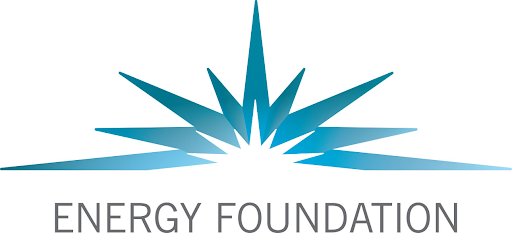
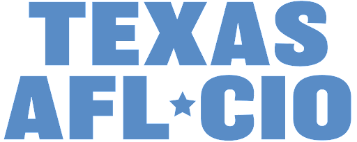
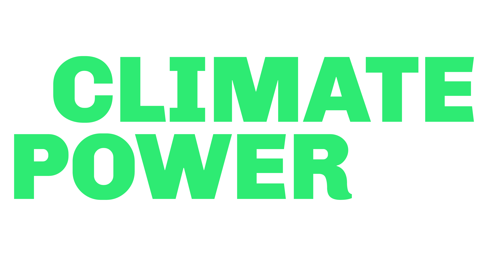
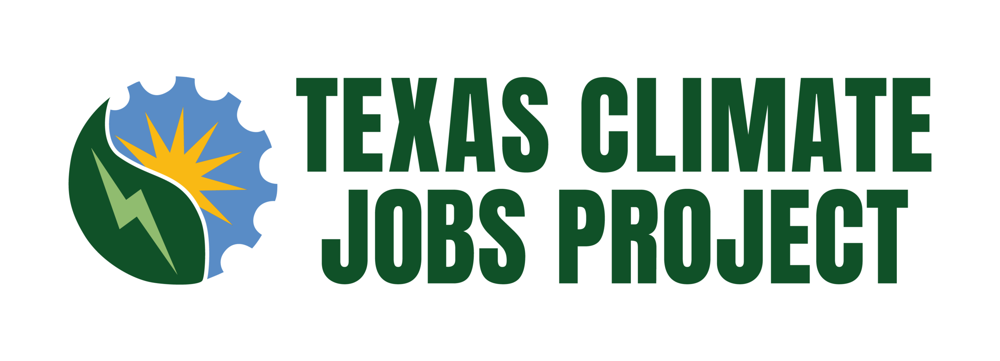
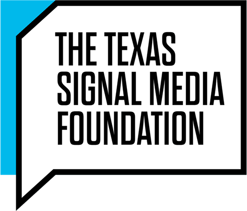

Our Partners
A select group of purpose-driven organizations we engage with.
- 
- 


- 
- 
- 
Co-Founder
Co-Founder
Co-Founder
Senior Associate
Associate
We craft your story, tailor your message to the right audiences, and engage the press on your behalf.
We identify the decision makers you need to move, enlist influencers, and deploy campaigns to shape policy.
A select group of purpose-driven organizations we engage with.
Seeker Strategies has been certified by the State of Texas as a Historically Underutilized Business (HUB).
1609 S 1st St, Austin, TX 78704